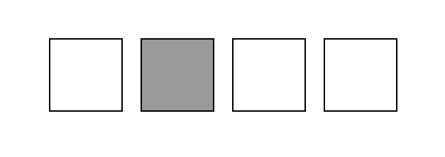

<!DOCTYPE html>
<html>
  <head>
    <title>Methodik der empirischen Forschung</title>
    <script src="jspsych-6.3.0/jspsych.js"></script>
    <script src="jspsych-6.3.0/plugins/jspsych-html-keyboard-response.js"></script>
    <script src="jspsych-6.3.0/plugins/jspsych-image-keyboard-response.js"></script>
    <script src="jspsych-6.3.0/plugins/jspsych-preload.js"></script>
    <script src="jspsych-6.3.0/plugins/jspsych-video-keyboard-response.js"></script>
    <script src="jspsych-6.3.0/plugins/jspsych-call-function.js"></script>
    <script src="jspsych-6.3.0/plugins/jspsych-survey-html-form.js"></script>
    <script src="jspsych-6.3.0/plugins/jspsych-serial-reaction-time.js"></script>
    <link href="jspsych-6.3.0/css/jspsych.css" rel="stylesheet" type="text/css">
  </head>
  <body></body>

<script>
var timeline = [];

/*TODO:
X Frage zum Alter und Geschlecht (Formular??)
X Willkommen+Aufgabe anpassen mit den später gezeigten Kästchen
X korrekte Reihenfolge implementieren
X Zuordnung zu einer der 3 Gruppen
X 2. Reihenfolge implementieren
X Musik, Störgeräusche und blank 
- Video als Zwischensequenz
X Kompletter Durchlauf mit random Sequenzen
- Datenbank zum Speichern der Ergebnisse
*/

/*Willkommen + Aufgabe*/
var welcome = {
    type: "html-keyboard-response",
    stimulus: "Willkommen zu diesem Experiment. Bitte drücken Sie eine beliebige Taste."
  };
  timeline.push(welcome);

// Persönliche Angaben (Alter, Geschlecht)
// Zustimmung zur Teilnahme
var check_consent = function(elem) {
  if (document.getElementById('consent_checkbox').checked) {
    return true;
  }
  else {
    alert("If you wish to participate, you must check the box next to the statement 'I agree to participate in this study.'");
    return false;
  }
  return false;
};

//Alter und Geschlecht angeben
var form_trial = {
  type: 'survey-html-form',
  preamble: '<p> Bitte geben Sie hier Ihre Informationen an.</p>',
  html: '<label for="alter"><strong>Alter: </strong><input id="alter" name="alter" type="number" min="1" max="100" step="1"> Jahre</label><br><label for="geschlecht"><strong>Geschlecht: </strong><div><input type="radio" id="männlich" name="gender" value="männlich"><label for="männlich">Männlich</label><br><input type="radio" id="weiblich" name="gender" value="weiblich"><label for="weiblich">Weiblich</label><br><input type="radio" id="divers" name="gender" value="divers"><label for="divers">Divers</label></label></div><br>',
  button_label: 'Weiter',
  dataAsArray:true
};
timeline.push(form_trial);

  //Erklärung
  var instructions = {
    type: "html-keyboard-response",
    stimulus: `
      <p>Bei diesem Experiment werden 4 Kästchen auf dem Bildschirm angezeigt, von denen immer genau eines grau ist.</p><p>Bitte legen Sie Ihre Finger auf die Tasten <strong>Y,X</strong> und <strong>N,M,</strong> diese repräsentieren je eines der Kästchen</p>
      <p>Drücken Sie bitte so schnell Sie können die Taste an der Stelle, an  der das graue Kästchen erscheint.</p>
      <p>Achtung: Sobald Sie eine Taste drücken beginnt das Experiment.</p>
      <p><strong>Beispiel:</strong></p>
        <div></img>
          <p class='small'><strong>Drücken Sie x</strong></p>
        </div>
      <br>
    `,
    post_trial_gap: 2000
  };
  timeline.push(instructions);


  //test trials 
  var trial = {
  type: 'serial-reaction-time',
  grid: [[1,1,1,1]],
  target: jsPsych.timelineVariable('target'),
  choices: [['y','x','n','m']],
  data: {
        task: 'response',
        correct_response: jsPsych.timelineVariable('correct_response')
      },
      on_finish: function(data){
        data.correct = jsPsych.pluginAPI.compareKeys(data.response, data.correct_response);
      }
  }
  //Reihenfolge ABADBCDACBDC -> yxymxnmynxmn
    var test_stimuli = [
      {target: [0,0], correct_response: 'y'},
      {target: [0,1], correct_response: 'x'},
      {target: [0,0], correct_response: 'y'},
      {target: [0,3], correct_response: 'm'},
      {target: [0,1], correct_response: 'x'},
      {target: [0,2], correct_response: 'n'},
      {target: [0,3], correct_response: 'm'},
      {target: [0,0], correct_response: 'y'},
      {target: [0,2], correct_response: 'n'},
      {target: [0,1], correct_response: 'x'},
      {target: [0,3], correct_response: 'm'},
      {target: [0,2], correct_response: 'n'}
    ];

    /*
  jsPsych.init.override_safe_mode = true;

  var video = {
    type: "video-keyboard-response",
    stimulus:`<video><source src="sample-mp4-file.mp4" type="video/mp4"/></video>`,
    autoplay: true,
    trial_ends_after_video: true,
    };
  timeline.push(video);
*/

var audio = null;
//Einteilung Musikgruppen
var start_audio1 = {
  type: 'call-function',
  func: function(){
    audio = new Audio();
    var r = Math.random()*3;
    if (r<1){
      audio.src = "Krach.mp3";
      audio.loop = true;
      audio.volume = 0.2;
      audio.play();
      return 'Gruppe1: Krach';
    }
    else if (r<2){
      audio.src = "";
      audio.loop = true;
      audio.volume = 0.2;
      audio.play();
      return 'Gruppe2: Nichts';
    }
    else{
      audio.src = "LoFi.mp3";
      audio.loop = true;
      audio.volume = 0.2;
      audio.play();
      return 'Gruppe3: LoFi';
    }
  }
}

var stop_audio = {
  type: 'call-function',
  func: function(){
    audio.pause();
  }
}

  //2.Reihenfolge ACDBADCBDABC -> ynmxymnxmyxn
  var test_stimuli2 = [
      {target: [0,0], correct_response: 'y'},
      {target: [0,2], correct_response: 'n'},
      {target: [0,3], correct_response: 'm'},
      {target: [0,1], correct_response: 'x'},
      {target: [0,0], correct_response: 'y'},
      {target: [0,3], correct_response: 'm'},
      {target: [0,2], correct_response: 'n'},
      {target: [0,1], correct_response: 'x'},
      {target: [0,3], correct_response: 'm'},
      {target: [0,0], correct_response: 'y'},
      {target: [0,1], correct_response: 'x'},
      {target: [0,2], correct_response: 'n'}
    ];

    //Zufällige Durchläufe erzeugen
    var random_procedure = {
    timeline: [trial],
    repetitions: 5,
    timeline_variables:[
    {target: [0,0], correct_response: 'y'},
    {target: [0,1], correct_response: 'x'},
    {target: [0,2], correct_response: 'n'},
    {target: [0,3], correct_response: 'm'}
    ],
    sample:{
      type: 'with-replacement',
      size: 12, 
    }
  }

    //5 Zufällige Blöcke
    timeline.push(random_procedure);

    //10 sequentielle Blöcke
    var test_procedure = {
      timeline: [trial],
      timeline_variables: test_stimuli,
      repetitions: 10,
    }
    timeline.push(test_procedure);

    //5 Zufällige Blöcke
    timeline.push(random_procedure);

/*
    //Video
    var test_procedure1 = {
      timeline: [trial],
      timeline_variables:,
      repetitions: 1,
      //randomize_order: true
    }
    timeline.push(test_procedure1);
*/
    //Durchlauf 2 mit Gruppeneinteilung, Audio beginnt
    var test_startAudio ={
      timeline:[start_audio1],
      repetitions:1
    }
    timeline.push(test_startAudio);

    //5 Zufällige Blöcke
    timeline.push(random_procedure);

    //10 sequenzielle Durchläufe
    var test_procedure2 = {
      timeline: [trial],
      timeline_variables: test_stimuli2,
      repetitions: 10,
    }
    timeline.push(test_procedure2);

    //5 Zufällige Blöcke
    timeline.push(random_procedure);

    //Audio beenden
    var test_stopAudio ={
      timeline: [stop_audio],
      repetitions:1
    }
    timeline.push(test_stopAudio);

    /* define debrief */
    var debrief_block = {
      type: "html-keyboard-response",
      stimulus: function() {

        var trials = jsPsych.data.get().filter({task: 'response'});
        console.log(trials.count());
        var correct_trials = trials.filter({correct: true});
        var accuracy = Math.round(correct_trials.count() / trials.count() * 100);
        var rt = Math.round(correct_trials.select('rt').mean());

        return `<p>Sie haben in ${accuracy}% der Fälle die korrekte Taste gedrückt.</p>
          <p>Ihre durchschnittliche Reaktionszeit betrug ${rt}ms.</p>
          <p>Drücken Sie eine beliebige Taste um das Experiment abzuschließen. Vielen Dank!</p>`;

      }
    };
    timeline.push(debrief_block);

    /* start the experiment */
    jsPsych.init({
      timeline: timeline,
      show_progress_bar: true,
      auto_update_progress_bar: true,
      on_finish: function() {
        jsPsych.data.displayData();
      }
    });
  </script>
</html>
